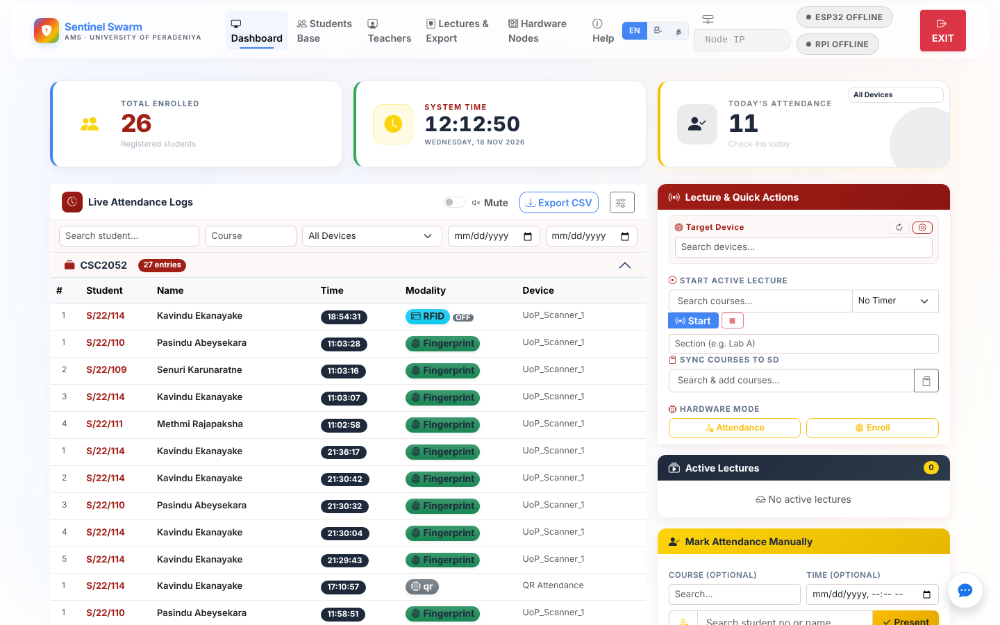
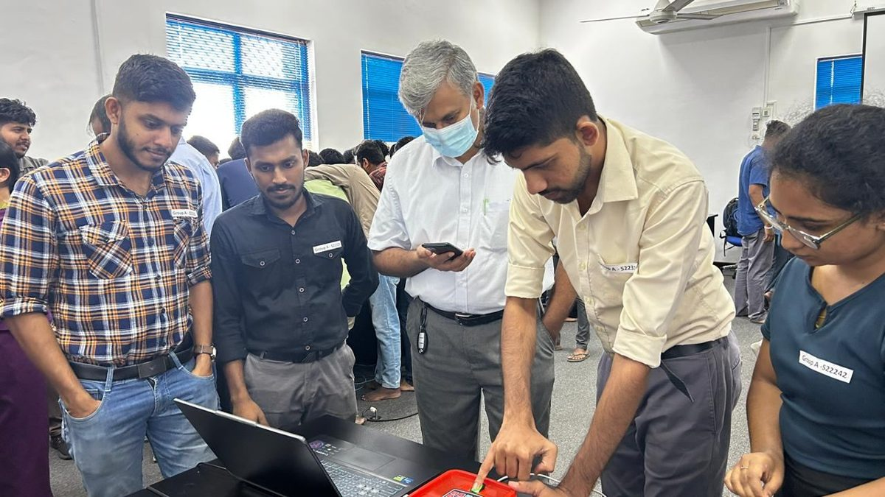
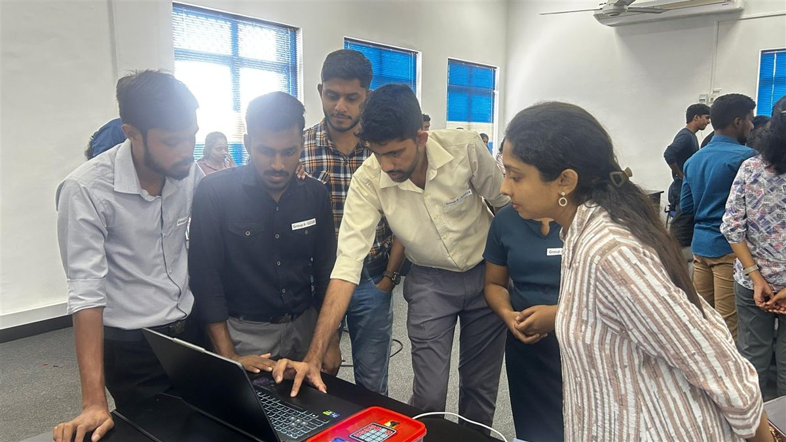
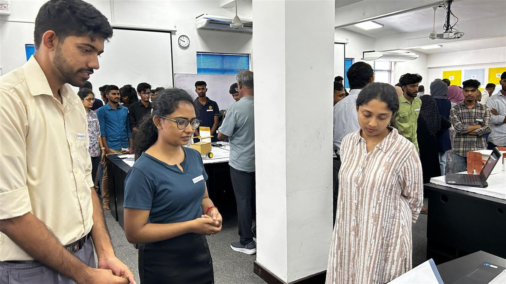
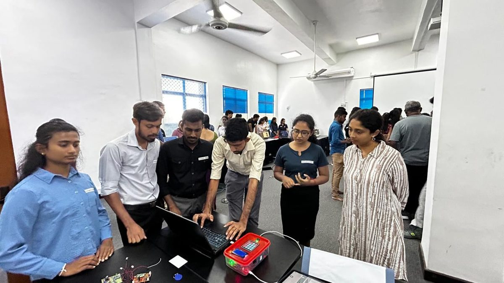

Live system
Dashboard tour
Real screenshots of the running system. Pick a view.
Screenshots use demo data: student and lecturer names are made up. Click a screenshot to enlarge it.
Sentinel Swarm replaces manual roll-call with smart nodes at the classroom door. Students check in with a fingerprint, RFID card, face, voice or QR code, and every check-in appears on a live dashboard for admins, lecturers and students.

Every method feeds the same attendance log, checked against the lecture that is running and the courses the student is enrolled in.
FM10A sensor on the ESP32 node. Enrol once and the template is shared with every sensor on campus.
ESP32 nodeTap a student ID card on the MFRC522 reader for a check-in in under a second.
ESP32 nodeA Raspberry Pi camera recognises students as they walk in and posts attendance automatically.
Raspberry Piface-api.js runs in the lecturer's browser with a liveness check, using any webcam.
Web dashboardSpeaker verification by audio fingerprint: students say a phrase and are matched to their enrolled voice.
Web dashboardA QR code that refreshes every 5 seconds, so a photo of it sent to a friend is already useless.
Web dashboardLecturers can mark a student present from any device when everything else fails.
Web dashboardReal screenshots of the running system. Pick a view.
Screenshots use demo data: student and lecturer names are made up. Click a screenshot to enlarge it.
Hardware nodes and browsers all talk to one PHP API. The API checks who the student is, whether a lecture is running and whether they are enrolled, then writes one row to MySQL.
A custom ESP32 terminal with its own battery and power gating, plus a Raspberry Pi camera node for the entrance.




About 21,000 lines of PHP, 12,600 lines of JavaScript, 4,500 lines of ESP32 firmware and a Python service for the Pi.
PHP 8 with PDO, MySQL / MariaDB, server-sent events for live monitoring, CSRF-protected sessions, role-based access.
Bootstrap 5, vanilla JavaScript, Chart.js analytics, face-api.js in the browser, with Sinhala and Tamil language options.
ESP32 Arduino C++ firmware with OTA updates and an offline SD queue, Raspberry Pi with Python, Flask, OpenCV and face_recognition.
React + Vite single-page app, installable as a PWA, and a Tauri desktop app for lecturers.
The system grew in three stages.